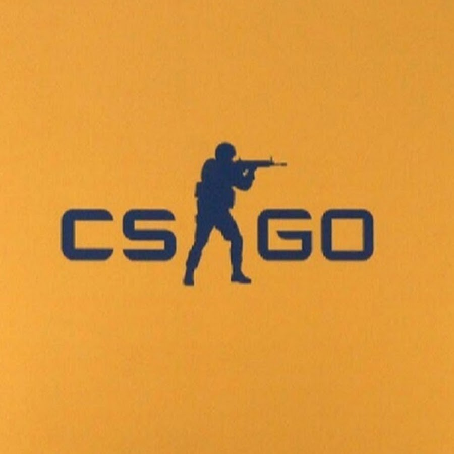
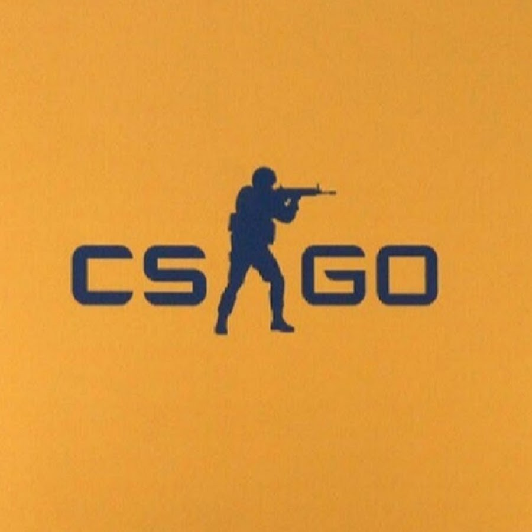

Counter-Strike Global Offensive
A játék története avagy frissítései
Az első béta verzió 1999. június 19-én látta meg a napvilágot Half-Life modifikációjaként. A Counter-Strike 1.6(CS 1.6 rövidebb nevén) 2003 szeptember 15-től már játszható volt. A Counter-Strike 1.6 támogatása hivatalosan megszűnt 2004-ben, de ettől függetlenül még nagyon sok régi 1.6-os szerver működik világszerte, így Magyarországon is.A játék legfrisebb verziója Counter-Strike Global Offensive néven fut ami 2012. Agusztus 21. napján jelent meg.

 
